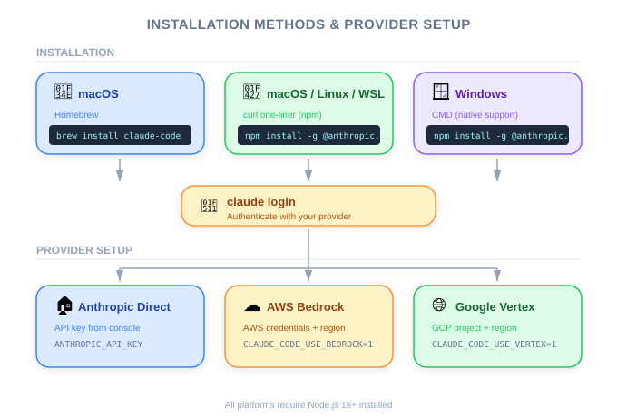

← Back to Index
Claude Code Setup — PM Perspective
| Item |
Details |
| Exam Coverage |
D3 — Effective Claude Code Usage (30% of exam) |
| Task Statements |
3.1 (CLAUDE.md hierarchy — awareness level) |
| Course Source |
claude-code-in-action / 02-getting-started / Lesson 05 (text-only) |

Figure: Installation methods across platforms.
TL;DR
Claude Code is a command-line tool that developers install with a single command. PMs need to know it is CLI-only (no GUI), works on all major platforms, and can be configured to route through enterprise cloud providers (AWS Bedrock, Google Cloud Vertex) for compliance.
Why PMs Should Care
- Deployment planning — Knowing installation requirements helps you estimate onboarding time for engineering teams
- Enterprise compliance — Cloud provider options (Bedrock, Vertex) determine whether Claude Code fits your organization's data residency and security policies
- No GUI = developer-native — This is not a product you demo in a browser; it lives in the terminal
Business Analogies
| Concept |
Business Analogy |
| CLI-only tool |
Like Slack being chat-only with no email fallback — it forces adoption of the native workflow |
| Cloud provider routing |
Like choosing whether payments go through Stripe directly or through your bank's payment gateway |
| First-run authentication |
Like SSO login before accessing any enterprise SaaS |
Decision Framework: Cloud Provider Choice
| Factor |
Direct Anthropic API |
AWS Bedrock |
Google Cloud Vertex |
| Setup complexity |
Lowest |
Medium |
Medium |
| Enterprise billing |
Separate Anthropic bill |
Consolidated AWS bill |
Consolidated GCP bill |
| Data residency |
Anthropic's infrastructure |
Your AWS region |
Your GCP region |
| Best for |
Individual devs, small teams |
AWS-first organizations |
GCP-first organizations |
Practice Question
Scenario: Enterprise Rollout Planning
Your engineering lead asks how long it will take to roll out Claude Code to a 50-person team. Based on this lesson, which answer is most accurate?
- A. Several weeks — each developer needs custom configuration
- B. Minutes per developer — it is a single CLI install command plus authentication
- C. It depends entirely on the cloud provider setup
- D. Claude Code requires IT to install it centrally on all machines
Answer
**B** — Claude Code installs with a single command and requires only first-run authentication. The install itself is trivial.
However, if the organization requires Bedrock/Vertex routing, there is additional cloud configuration that IT or DevOps handles once (not per developer). This does not change the per-developer install time.
**PM Takeaway**: Do not overestimate rollout complexity. The bottleneck is cloud provider configuration (if needed), not the tool installation itself.